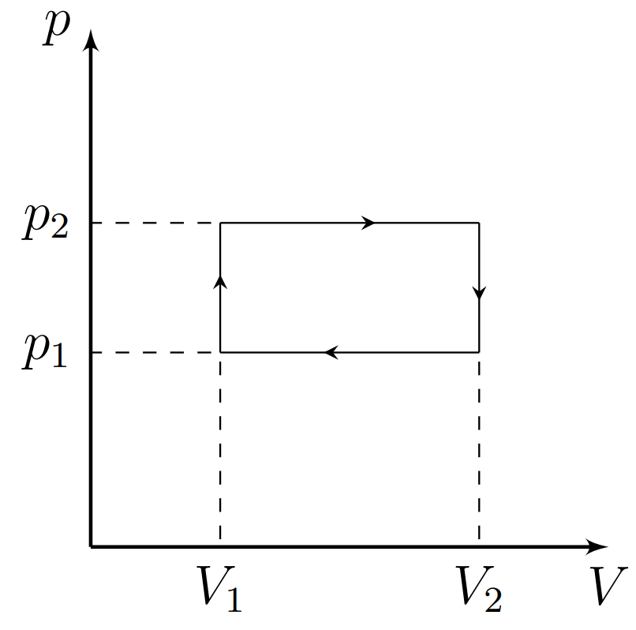

W25 (2025) — English translation
As is known, efficiency is the ratio of the useful work performed by the working fluid to the amount of heat supplied to it. Loosely speaking, this coefficient determines how effectively the heat coming from a certain heater is “transferred” into work. This problem considers a cycle carried out with an ideal gas, consisting of two isobars and two isochores (see Fig. 1). The adiabatic exponent of the gas is known and equal to $\gamma$. Let us assume that heat is removed from the gas using a refrigeration machine operating in a reverse Carnot cycle between the gas and the environment. Let $A_г$ be the work done by the gas during one described cycle, and $A_{хм}$ be the work done on the working fluid of the refrigeration machine during one cycle of the working fluid. In this case, heat is supplied to the gas through heat exchange with the environment. In this case, it is logical to introduce instead of efficiency the “efficiency” of the cycle $\eta$: $$\eta = \frac{A_г}{A_{хм}}.$$ Consider that the change in gas temperature during one cycle of the refrigeration machine is negligible.

Let the maximum temperature in the cycle be equal to the ambient temperature $T$, with isochoric cooling the temperature decreases from $T$ to $T-t_1$, with isobaric cooling – from $T-t_1$ to $T-t$.
Let the amount of gas be $\nu$.
For a refrigeration machine, the refrigeration coefficient $\chi$ is determined by the formula: $$\chi = \frac{Q_{-}}{A_{хм}},$$где $Q_{-}$ is the heat removed from the gas in one cycle.
Let us introduce the notations $y = t/T$ and $x=t_1/t$.
Now let's analyze what maximum $\eta$ can be obtained for different values of $y$ and $x$. Consider it known that the best $\eta$ is achieved at $y \ll 1$.
Source: https://pho.rs/p/3969